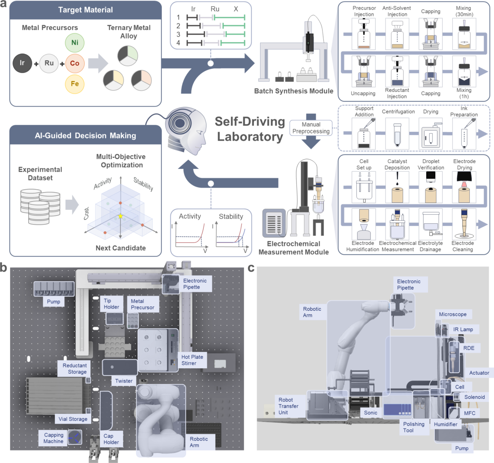
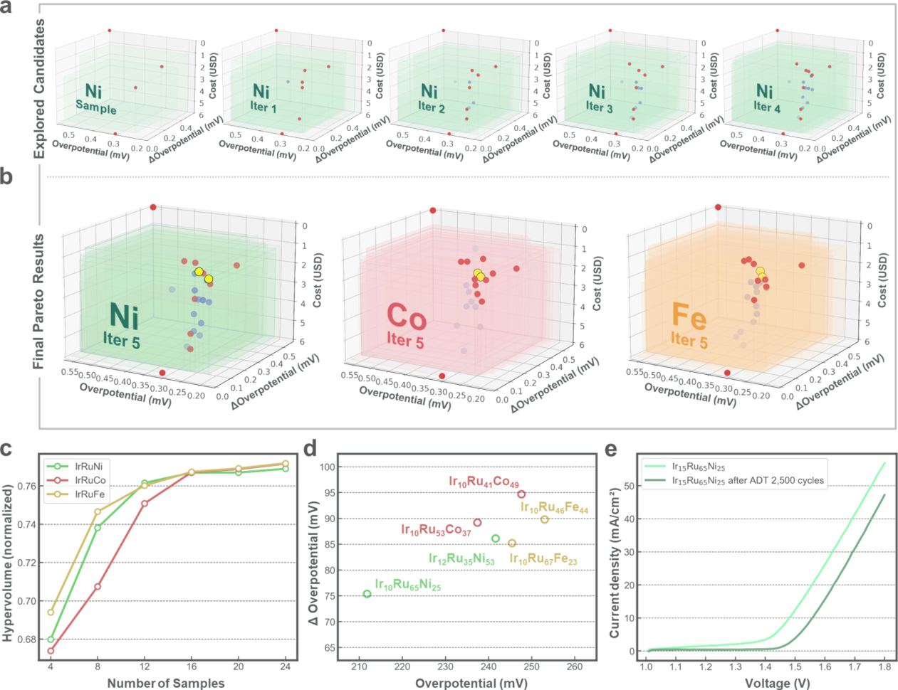
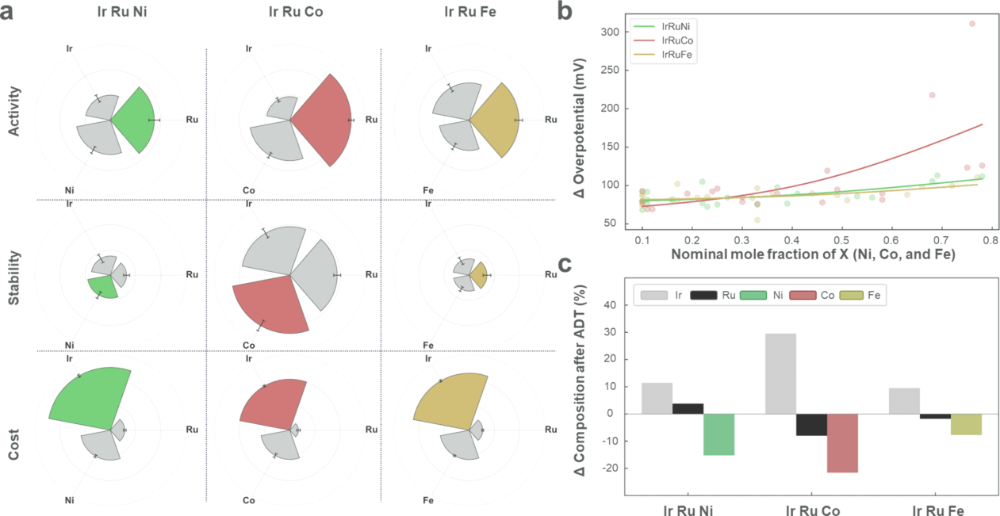
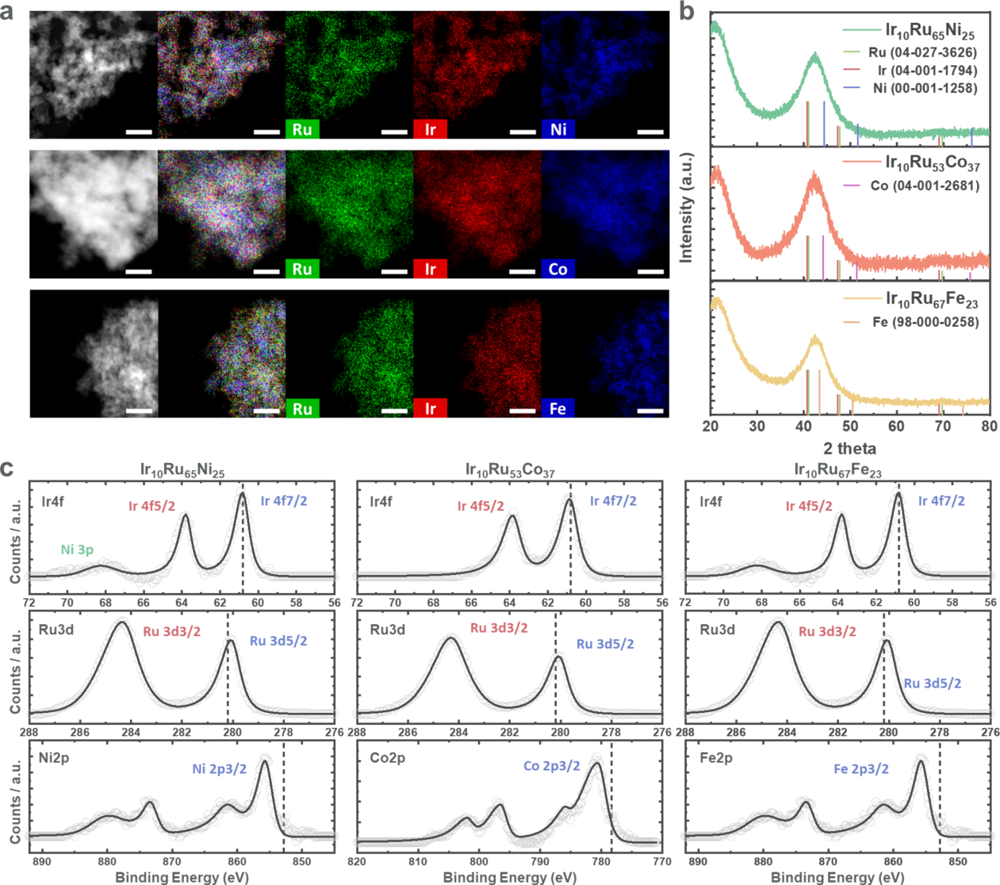
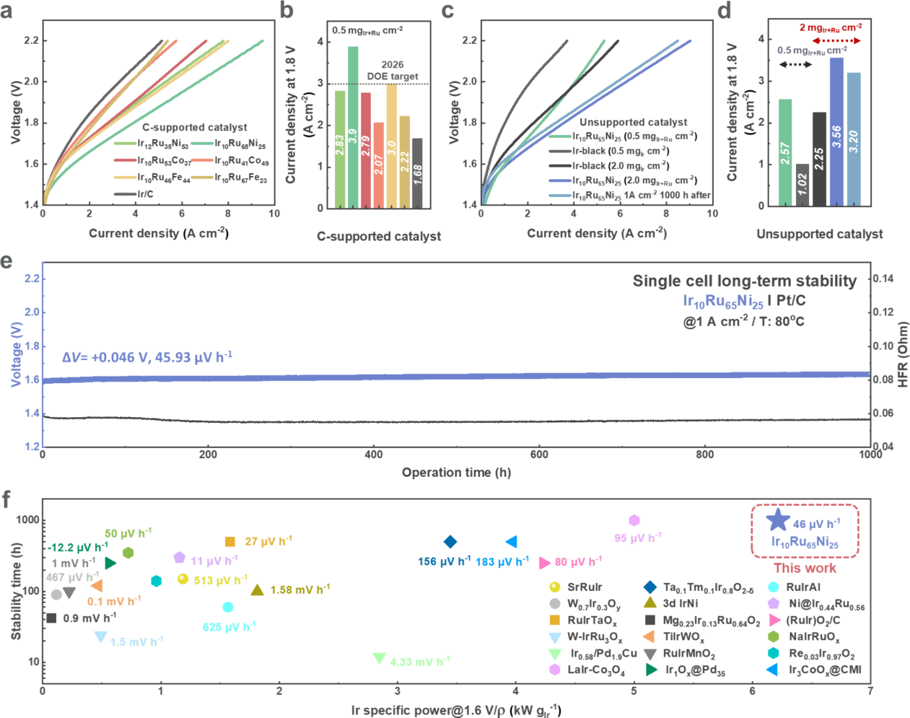

怎样让自主实验室同时寻找活性、寿命和成本合适的酸性析氧催化剂
论文原文 ↗原文：Daeho Kim、Hyobin Nam、Sae Yane Paek 等，Overcoming the Trade-off Between the Activity, Stability, and Cost of OER Catalysts for Proton Exchange Membrane Water Electrolysis in a Self-Driving Laboratory，ACS Energy Letters，2026。论文｜
质子交换膜水电解（PEMWE）要在酸性、高电位下把水氧化成氧气，阳极催化剂因而既要反应快，又要耐腐蚀。铱比较稳定，却昂贵而稀缺；钌活性高，却容易溶解；加入镍、钴或铁可以降低贵金属比例，也会改变活性与稳定性。于是，“哪种组成最好”没有一个只靠最低过电位就能回答的答案。
这篇工作的目标，是把三个常被分开处理的指标——活性、稳定性和前驱体成本——放进同一个实验决策循环。自主实验室每轮提出四个配方，完成合成和测试，再根据新结果决定下一批。作者分别探索 Ir–Ru–Ni、Ir–Ru–Co、Ir–Ru–Fe 三个体系，每个体系使用 24 个组成，最后把选出的配方推进到真实电解槽测试。
一、先定义怎样才算“值得做的下一批实验”
输入是前驱体比例，输出是三个实验目标
以 Ir–Ru–Ni 为例，一个候选输入是三个金属前驱体的摩尔分数。三者之和为一，因此它们位于一个三角形组成空间：三个顶点分别对应纯 Ir、纯 Ru、纯 Ni，内部则对应不同的混合比例。程序在满足组成约束的候选空间中搜索，再把选出的比例转成实际加液量。
对每个配方，作者用相同的测量定义获得反馈：活性用达到 10 mA cm⁻² 所需的过电位表示；稳定性用 2500 次加速耐久循环后过电位增加了多少表示；成本则按每个样品固定的总金属前驱体用量 0.100 mmol，结合各前驱体价格计算。三个指标都是越低越好。
如果一种配方活性更好、寿命也更好、成本还更低，就可以直接替代另一种。但多数配方各有优势，不能简单排成一列。帕累托前沿就是这样一组取舍方案：在已比较的候选中，改善其中一项通常要牺牲另一项。作者希望每轮实验都能把这条取舍边界向更有利的方向推进。

图1｜自主实验室的整体流程与两套硬件模块。a 将组成选择接到批次合成、样品预处理、电化学测量和下一轮决策；b 为合成装置，c 为自动电化学测量装置。
用代理模型挑候选，再让同一批四个实验各有作用
作者首先在每个三元体系测量四个起始组成：三个纯金属顶点和三元中心。随后分别用高斯过程拟合三个目标。高斯过程是一种同时给出性质预测与预测不确定性的回归模型：它根据已有组成及测量值，估计未测配方可能位于哪里，以及预测有多确定。
下一步需要选择哪些点真正做实验。这里使用的 qNEHVI，是面向带噪声、多目标和批量实验的贝叶斯优化选择规则。它综合考虑候选的预测表现与不确定性，估计一批新实验能为帕累托前沿增加多少有利空间。这个“空间体积”称为超体积，可以把三项指标的整体改善概括成一个量。
直接选择得分最高的四个候选，可能把一批实验集中到相似位置。作者因此先提出 100 个高得分候选，再按照模型预测的三项目标值，把它们聚成四组；每组选择一个对超体积改善有贡献的代表。这样，同一批实验既瞄准有希望的区域，又能覆盖不同的性能取舍。
每完成一批四个样品，就将实测结果加入已有数据，重新拟合三个高斯过程，再提出下一批。从四个起始点出发，接续五批 AI 引导实验，构成每个体系的 24 次实验。
二、配方怎样变成可反馈的数据
自动合成模块按照指定比例加入金属前驱体和反溶剂，完成混合、加还原剂与后续反应。其后由人工完成载碳、离心、真空干燥和墨水制备，再进入自动电化学模块。
电化学测试采用旋转圆盘电极。电极旋转可以控制溶液输运，使不同样品在一致的测量条件下比较。装置自动完成电极定位、滴涂、液滴视觉检查、干燥、测量以及清洗；从循环伏安和线性扫描伏安得到电压—电流数据，再提取活性与耐久指标。成本由对应配方计算，三项数值一起返回优化程序。
这个闭环的关键连接是：算法提出的组成必须能被设备执行，设备产生的曲线必须能被转换成下一轮算法使用的同一组指标。 作者围绕常规催化研究的实际步骤搭建这条链，合成与测量模块还可交错运行，以利用批量实验能力。
三、24 个组成怎样找到值得进入电解槽的候选
找到多种取舍，再从中选出均衡配方

图2｜三项目标怎样随实验推进而改善。a 展示 Ir–Ru–Ni 探索过程，b 中黄色点为进一步选出的均衡配方，c 为超体积随样品数的变化，d、e 比较入选组成的活性和耐久表现。
在三个体系中，帕累托前沿随轮次向更好的性能区域扩展。最终，Ir–Ru–Ni、Ir–Ru–Co、Ir–Ru–Fe 分别得到 12、14、12 个帕累托候选。图2c 的超体积增长把这个过程显示得很直观：前几批改善较大，随后增幅逐渐收小。
但电解槽测试不宜把所有候选再做一遍，因此作者设计了一个后续选择方法：先要求候选在三项指标上都位于帕累托集合较好的一半；如果同时达标的不足两个，就逐步放宽百分位阈值，直到每个体系至少留下两个。这样选出的配方在三个目标上都比较均衡。
其中，Ir₁₀Ru₆₅Ni₂₅/C 在半电池中达到 10 mA cm⁻² 的过电位为 211.8 mV，兼具较好的耐久表现。按固定前驱体用量计算，其前驱体成本为 1.38 美元，纯 Ir 对照为 5.99 美元。这里的 /C 表示筛选阶段把纳米颗粒分散在碳载体上，有助于制备和比较电极。
成分趋势与材料表征解释了为什么 Ni 体系突出

图3｜模型分析与实测组成变化相互连接。a 比较三个体系的组成敏感性，b 展示第三金属比例与耐久后过电位增加的关系，c 展示耐久测试前后的元素组成变化。
作者用 SHAP 分析模型中的组成—性能关系。SHAP 是把预测变化分配给不同输入特征的方法，在这里帮助观察哪些组成变化最影响三项目标。Ru 比例与活性关系突出，Ir 对成本影响突出；Co 体系的稳定性则对组成变化尤其敏感。
这与耐久测试后的元素分析相呼应：第三金属都会发生溶出，但 Co 体系不仅 Co 损失显著，还伴随更明显的 Ru 流失。因此，加入便宜金属带来的收益，要与运行时材料的实际演化一起考虑。Ni 体系在作者探索的配方中形成了更合适的取舍。

图4｜三元纳米颗粒的材料表征。a 显示元素在颗粒中的分布，b 为 XRD，c 为 XPS；它们连接了设计组成与实际制得材料的结构和电子状态。
TEM–EDS 显示三种金属在纳米颗粒中较均匀分布；Ir₁₀Ru₆₅Ni₂₅/C 的颗粒平均尺寸约为 1.57 ± 0.47 nm。XRD 和 XPS 进一步支持合金形成及金属之间电子环境的改变。由此，优化程序选出的比例对应到了实际合成的多金属材料。
四、把半电池找到的配方推进到 PEM 电解槽

图5｜从筛选走到器件测试。a、b 比较碳载样品的膜电极表现；c、d 为无碳样品；e 展示 80 ℃、1.0 A cm⁻² 下的 1000 h 连续运行；f 比较铱用量对应的性能与运行时间。
作者先把碳载候选做成膜电极，在 80 ℃ 测试。Ir₁₀Ru₆₅Ni₂₅/C 在 1.8 V 达到 3.90 A cm⁻²，Ir/C 对照为 1.68 A cm⁻²，约提高到 2.3 倍。这一步把自动半电池筛选中的优选组成接到了器件性能。
随后，针对 PEMWE 阳极的长期运行，作者制备了无碳载体的 Ir₁₀Ru₆₅Ni₂₅ 纳米颗粒。在 80 ℃、1.0 A cm⁻² 下，电解槽连续运行 1000 h，总电压上升约 46 mV，对应约 45.93 μV h⁻¹。无碳样品在不同负载量下也优于商业 Ir black 对照。
长期运行还带来一个有意思的材料结果：初始 Ni、Ru 逐步溶出，约 200 h 后组成接近 Ir₉₅Ru₃Ni₂，并继续保持。作者另行制备一开始就具有这一富 Ir 比例的样品作比较，发现它的表现仍低于从 Ir₁₀Ru₆₅Ni₂₅ 出发运行后形成的催化剂。也就是说，初始配方及其重构路径参与塑造了最终催化状态。优化从前驱体组成出发，实际筛选到的是一条能走向良好运行状态的材料演化路线。
五、这项工作的贡献在哪里
这篇论文把 AI for Materials 的价值落实在一个完整任务中：如何用有限实验预算，为真实器件寻找性能、寿命和成本同时合适的材料。组成约束使建议能够执行，批量选择使四个并行实验各有作用，帕累托筛选把多项取舍转换成少量器件验证对象，而电解槽测试把发现推进到实际工作条件。
值得借鉴的是这套目标与实验的衔接方式。成本在探索开始时就是反馈目标，稳定性在每轮测试中更新，器件验证又独立接续在半电池筛选之后。最终得到的既是一个具体的低 Ir 配方，也是一个可以围绕实验资源和实际应用要求组织材料发现的闭环流程。
原始摘要完整中文翻译
质子交换膜水电解（PEMWE）为可持续制氢提供了一条途径，但其实际应用受到酸性析氧反应（OER）催化剂活性、稳定性与前驱体成本之间权衡关系的限制。在这里，我们提出一种自主实验室（SDL），将自动化批量合成、电化学半电池测试和 AI 引导的决策相结合，以同时优化这些性质。受组成约束的设计空间、基于聚类的批次选择以及逐步放宽百分位阈值的帕累托筛选，使 Ir–Ru–X（X = Ni、Co、Fe）三元体系能够得到高效探索。利用这一框架，平台对每个三元体系进行了 24 次实验，并确定 Ir₁₀Ru₆₅Ni₂₅/C 是一种帕累托均衡组成：其在 10 mA cm⁻² 下的过电位为 211.8 mV，加速耐久测试后的性能衰减有限，且 Ir 含量降低。在 PEMWE 中，Ir₁₀Ru₆₅Ni₂₅ 在 1.8 V 下提供了 3.90 A cm⁻² 的电流密度，并在 1.0 A cm⁻² 下稳定运行 1000 h，展示了由自主实验室驱动的多金属 OER 催化剂发现。